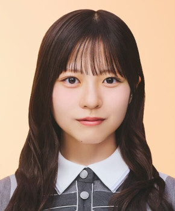
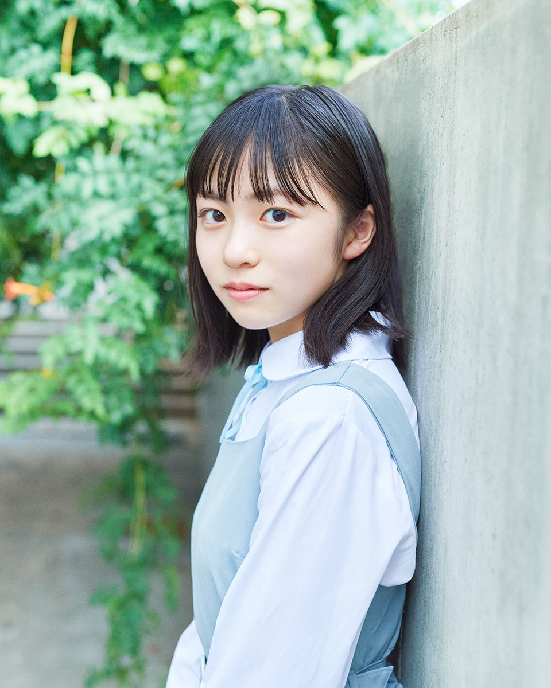
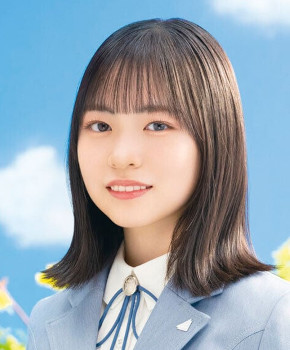
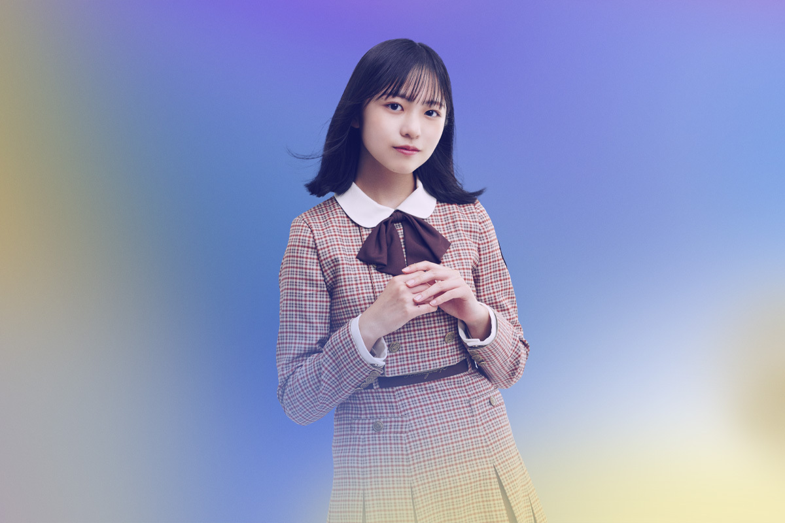
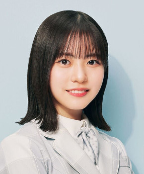
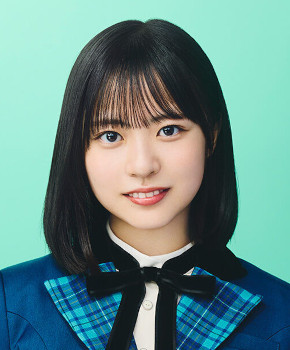
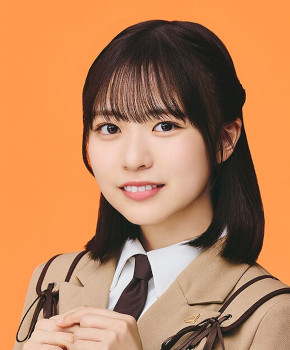
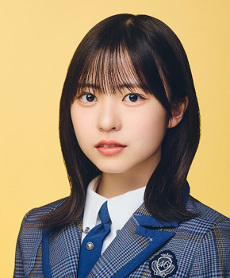
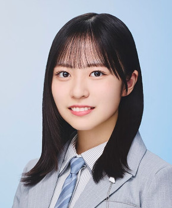
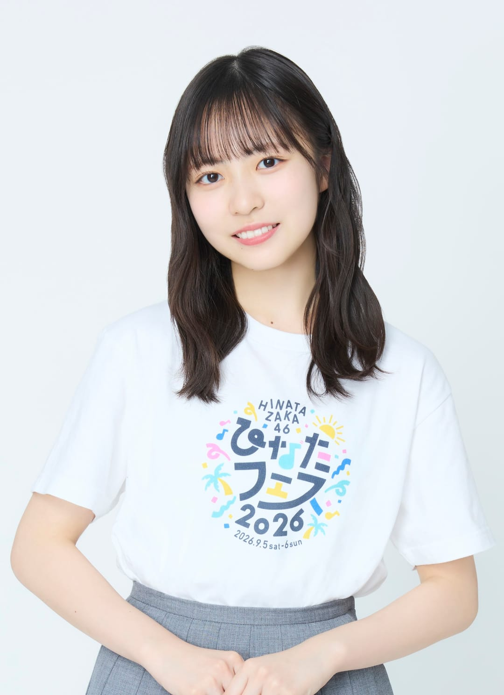

← メンバー一覧に戻る

イチャイチャ虫（2026年）・最新
日向坂46 4期生 ・ 現役
センター曲：7曲（シングル表題曲センター：3曲） フォーメーション/歌唱参加：34曲ライブ記録：センター 33公演・出演記録のある公演 101公演ブログ記事：138件
学年：2006年度（同級生 全12人を見る）
フォーメーション統計：登場 31曲・フロント（1列目）22曲よく隣になるメンバー：藤嶌果歩（11回）、小坂菜緒（11回）、金村美玖（3回）
シーラカンス、君はハニーデュー、夜明けのスピード、絶対的第六感、永遠のソフィア、イチャイチャ虫、クリスマスカウントダウン
この人のブログを見る ライブ記録で見る ☆ 推しに登録
推しに登録すると、トップページに「推しの新着」（最新のブログ）が出ます。









タップすると上の写真が切り替わります。上の写真をタップすると最新のアー写に戻ります。
 サカミチ
サカミチ